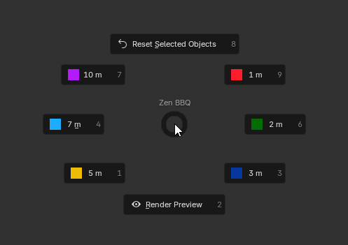
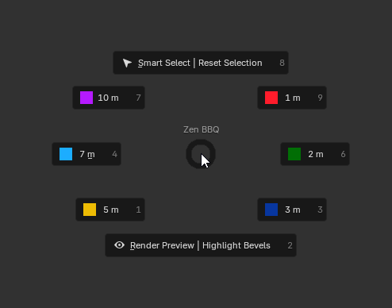

Pie Menu
The Pie Menu is called with the default hotkey Ctrl + Shift + X.
It is designed to give you incredibly fast access to the most frequently used functions of the Zen BBQ addon directly in the viewport.
Pie Menu in Object Mode
 |
|---|
| Fig. 1. Zen BBQ Pie Menu options available in Object Mode. |
Reset Selected Object(s)
Resets the selected objects to their default state, before Zen BBQ was used on them.
Same as in the N-Panel.
Colored Squares
Assign the corresponding bevel preset from the N-Panel to the selection. For more details, see the Quick Start Guide.
Render Preview
Toggles the Render Preview mode, see Quick Start Guide.
Pie Menu in Mesh Edit Mode
 |
|---|
| Fig. 2. Zen BBQ Pie Menu options available in Mesh Edit Mode. |
Smart Select | Reset Selection
- Just click: Executes Smart Select (see Quick Start Guide).
- Ctrl + click: Executes Reset Selection (same as in the N-Panel).
Colored Squares
Assign the corresponding bevel preset from the N-Panel to the selected geometry (edges or vertices). For more details, see the Quick Start Guide.
Render Preview | Reset Selection
- Just click: Toggles the Render Preview mode (see Quick Start Guide).
- Ctrl + click: Toggles the Highlight Bevels overlay (same as in the N-Panel).